AOR
TFM: RHINO-INSIDE
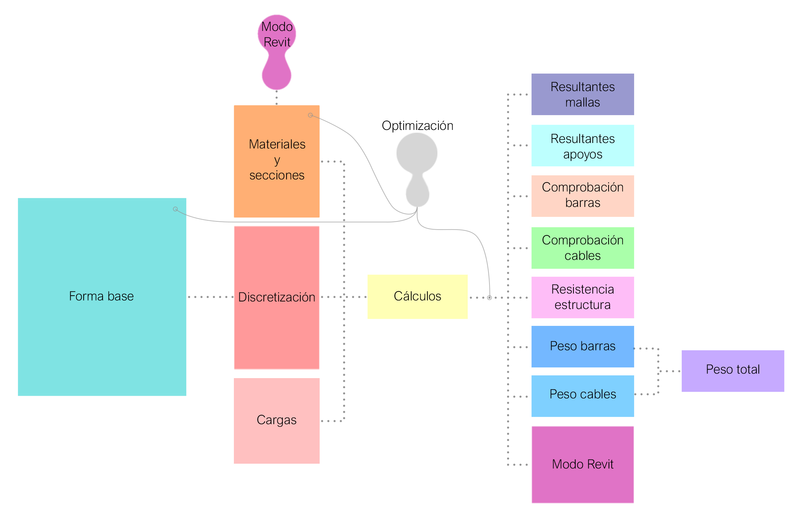
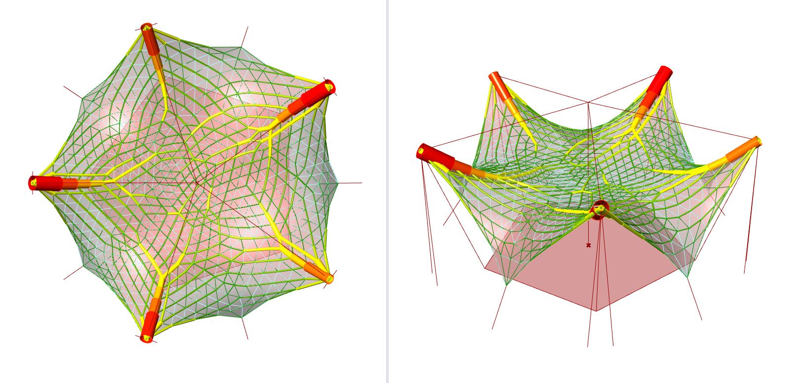
“¿Es posible definir estrategias determinadas para trabajar en entornos
BIM con tipologías de estructuras singulares?”
En mi TFM pretendí crear un proceso de trabajo ordenado y metodológico
en el que puedas diseñar, controlar y tomar decisiones proyectuales
acerca (en este caso) de las estructuras singulares. Controladas por el
diseño paramétrico y el cálculo estructural, permitirían iterar cada uno
de los diseños dentro de sus variables y poder deducir sus
comportamientos estructurales para otimizar y ayudar a la toma de
decisiones.
Como casos prácticos, se plantean cuatro tipologías estructurales
diferentes a desarrollar. Estructuras de: Tensegridad, Cascarones,
Hinchables y Textiles.
“Parametrización de las formas como capacidad de adaptación a las
necesidades y a los condicionantes”
Motivaciones para realizar este proyecto:
Arquitecturas y estructuras diferentes a las convencionales.
Singularidad y adaptación
Utilizar matemáticas y conceptos físicos como herramienta de diseño
Formas más orgánicas y naturales. Más complejas pero con más
posibilidades
Metodología de trabajo flexible para trabajar con este tipo de
estructuras

Programas principalmente utilizados:
REVIT + RHINO.INSIDE
GRASSHOPPER + WEAVERBIRD + MESH+
KANGAROO2 + K2ENG + MILLIPEDE
GALAPAGOS
TENSEGRIDAD
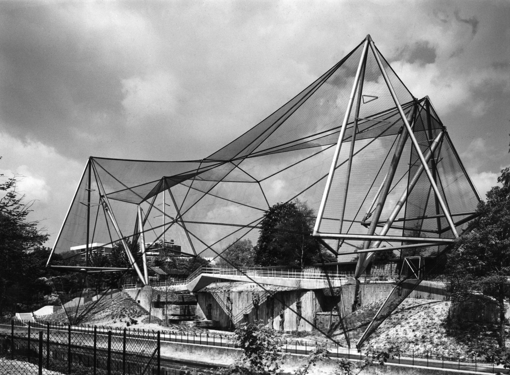
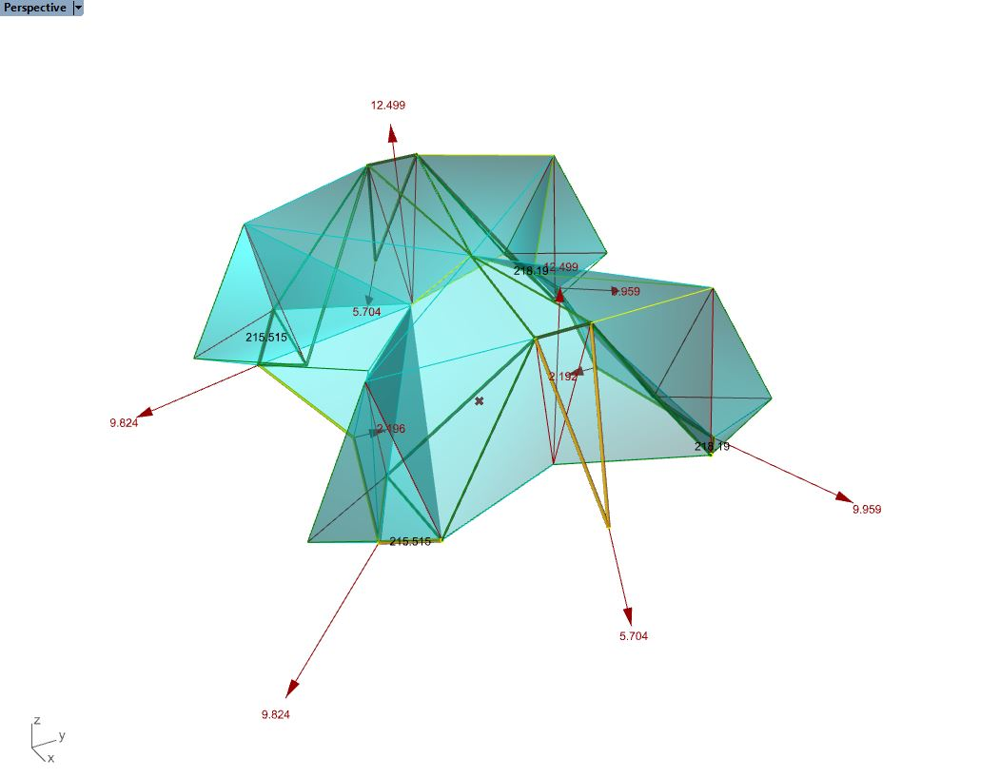
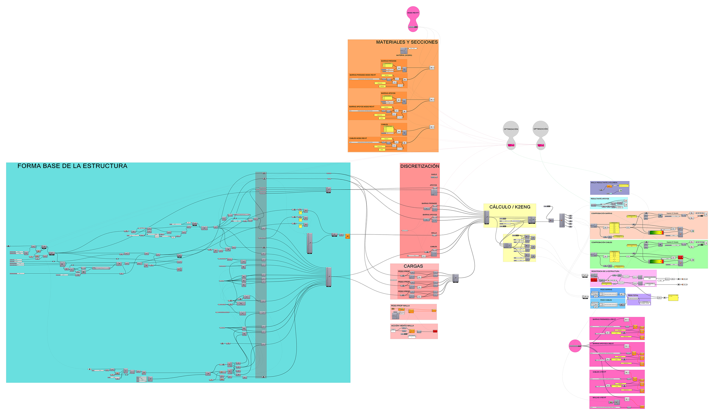
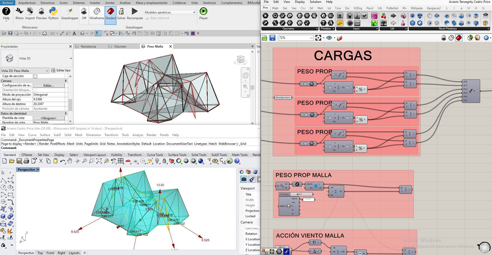
Se desarrolla una estrategia con una forma base, la cual tiene múltiples
variables en alturas, separaciones, inclinaciones, etc. La optimización
con Galápagos permite tener las formas más adecuadas dentro de las
características que creamos imprescindibles como por ejemplo, altura
mínima, separación máxima o tamaño máximo de la malla exterior. A su
vez, se calculan las secciones de barras y cables más óptimas de entre
las secciones comerciales existentes.
El "Modo Revit" permite actualizar geometría e información dentro
de Revit y permite visualizar a su vez el resto del proyecto que se
encuentre en el mismo Revit.
TENSEGRITY
· Compuesto por elementos a compresión (barras) y elementos a
tracción (cables).
· Poco material, poco peso, secciones
optimizadas.
· Gran rigidez y grandes superficies.
· Gran
variedad de formas.
MEMBRANAS DE HORMIGÓN

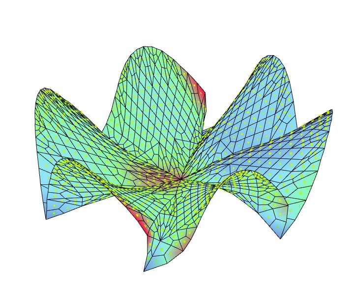

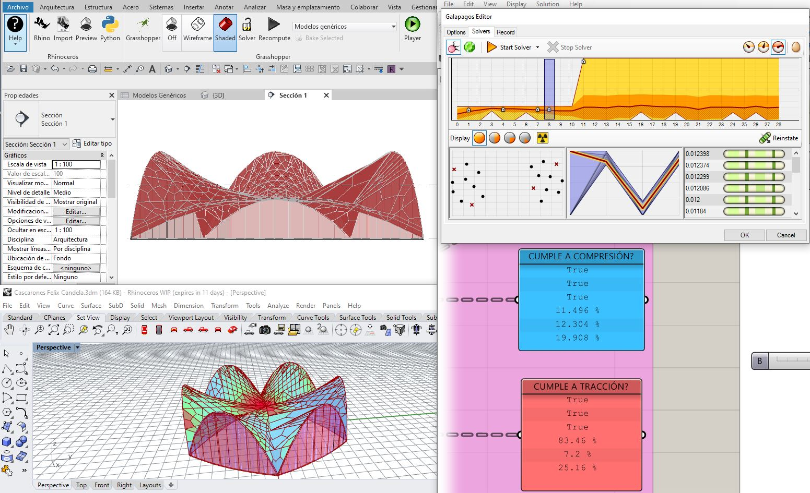
En este ejemplo se puede ver como también están contempladas las fuerzas
externas como el viento, además de las cargas propias y de uso. Uno de
los condicionantes que podemos establecer para la optimización puede ser
la flecha máxima, el número de arcos o determinar un espesor mínimo de
toda la membrana.
Además para tener una estructura óptima, se optó por crear un
ratio (Peso / Superficie Ocupada en planta), lo que permite hacerse una
idea a la hora de comparar unos resultados con otros,
MEMBRANAS DE HORMIGÓN
· No soportan esfuerzos a flexión, pero sí cortantes, tracción y
compresión. Transmite los esfuerzos a través de la superficie
· Su
forma puede hacer que esté muy optimizada a esfuerzos.
·
Complejidad de diseño y de construcción.
· Grandes superficies
pero requiere grandes alturas.
ESTRUCTURAS NEUMÁTICAS
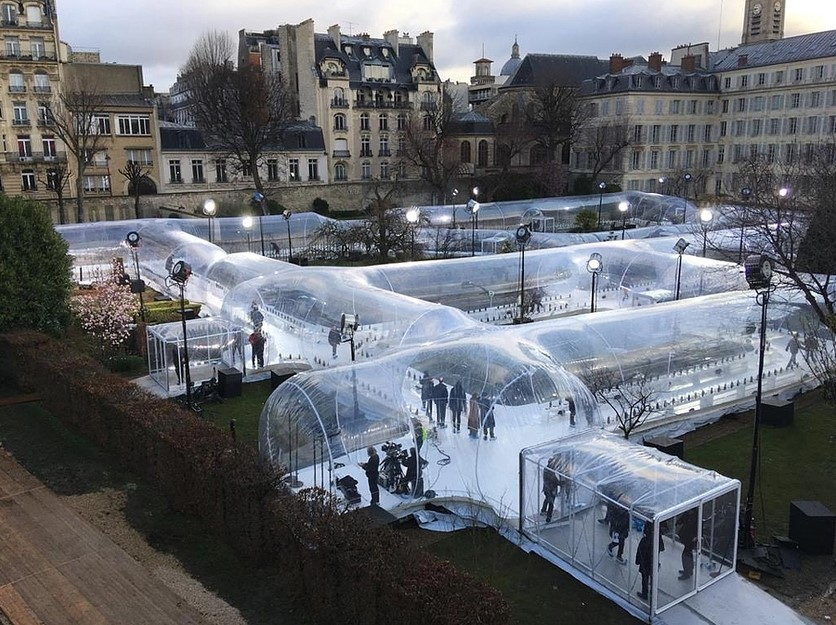
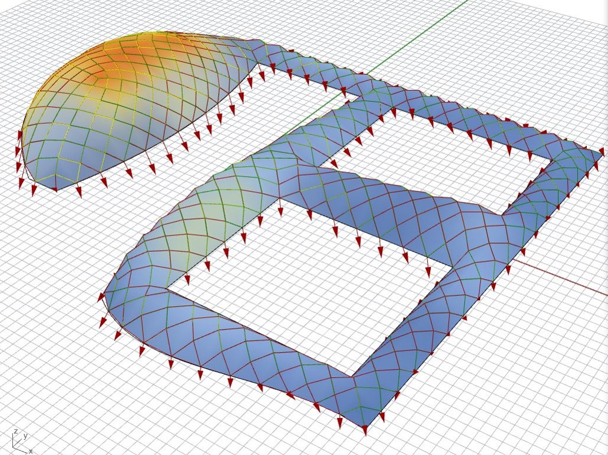

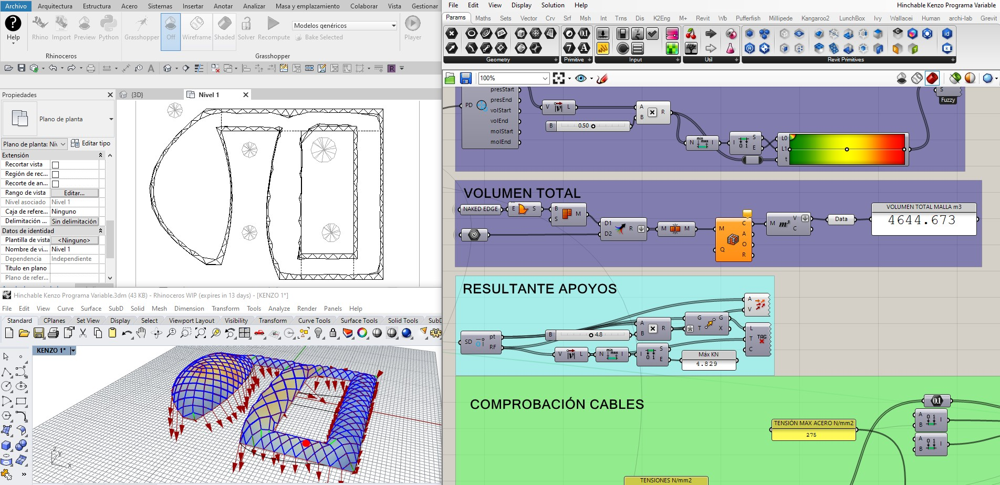
Una de las posibilidades que permite la creación de estas estructuras
con un diseño paramétrico es que permite tener consciencia de los m2 de
textil necesarios y la forma precisa de éste. Incluso las deformaciones
que puede sufrir dependiendo de la presión interior.
Para este ejemplo se definió una forma deseada en planta y se
estableció que se requería una altura de mínimo 3m en cada punto del
centro de los pasillos, para permitir una "habitabilidad". A partir de
ahí y dado el material textil, se calculan automáticamente tanto la
forma como la presión interna, así como las reacciones de los apoyos.
ESTRUCTURAS NEUMÁTICAS
· Compuesta por membranas flexibles, pretensadas a base de presión
de aire en su interior. En ocasiones rigidizadas por cables a tracción
en su superficie.
· Poco material, superficies muy amplias sin
apoyos interiores.
· Renovaciones de aire continuas.
·
Frágiles a acciones exteriores como viento y nieve.
TEXTILES
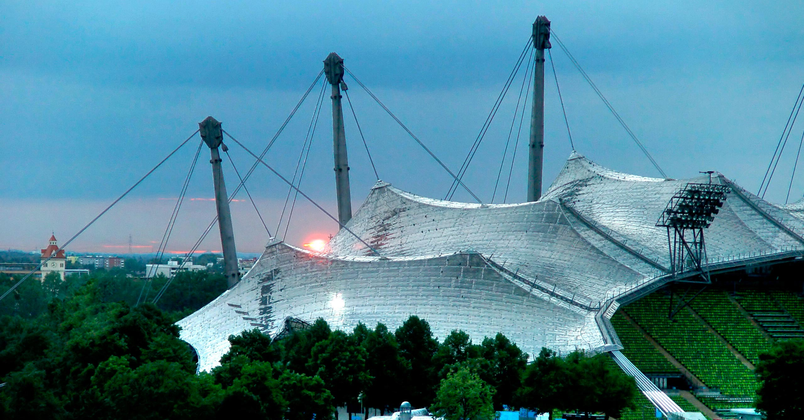


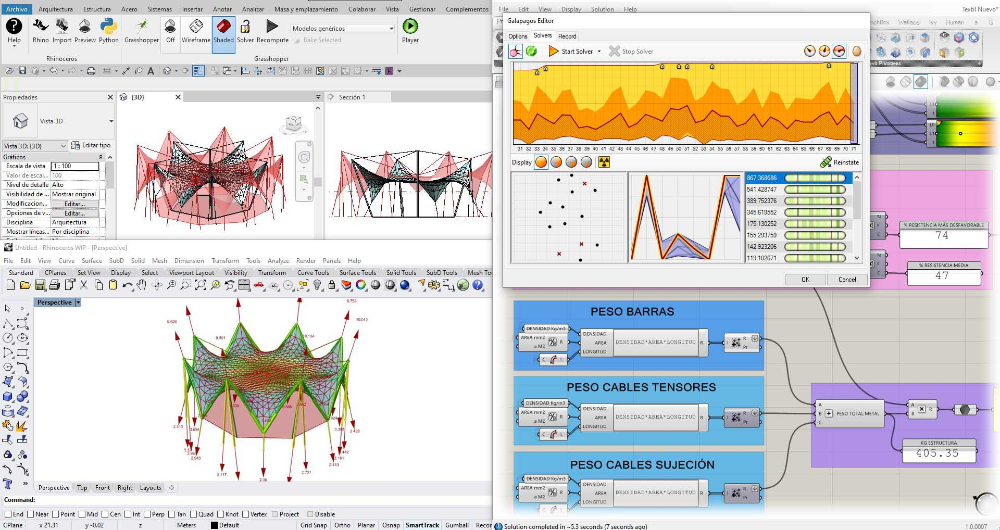
Para los textiles se decidió discretizar su superficie como una malla
más o menos densa de "cables", con resistencia equivalente a lo que
sería el sector correspondiente de textil, teniendo como referencia la
resistencia del textil en N/mm2.
En estos casos, debido a que el cálculo tiene que procesar un gran
número de elementos, se decidió cambiar la estrategia mostrando los
resultados con el "Zombie Solver" de Kangaroo2. Esto aporta mayor
velocidad en el proceso y devuelve únicamente el resultado finar de cada
iteración. Del mismo modo se puede tener a la vez la estructura completa
en Revit al pasar al "Modo Revit".
ESTRUCTURA TEXTIL TENSADA
· Compuesta por textiles a tracción, postes rotulados a compresión
y cables que proporcionan esas tensiones.
· Ligeras y grandes
espacios.
· Numerosas posibilidades y formas.
· Necesidad de
cables en pretensión.
OTRAS PRUEBAS
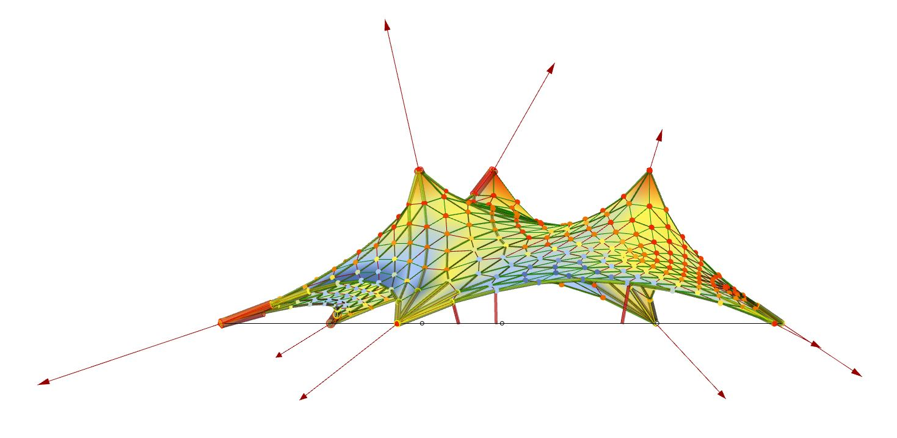
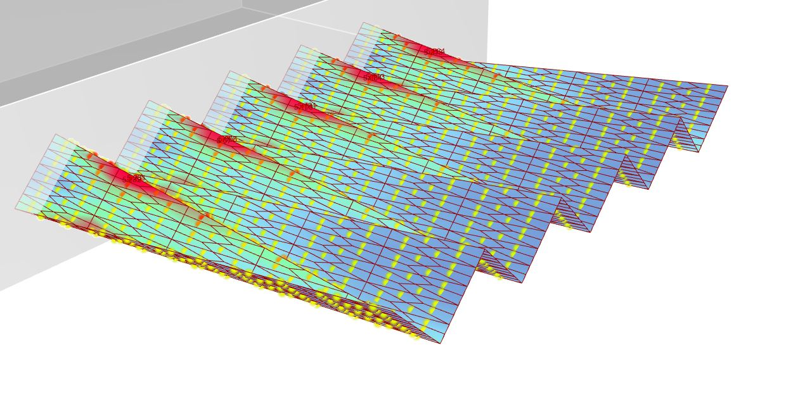
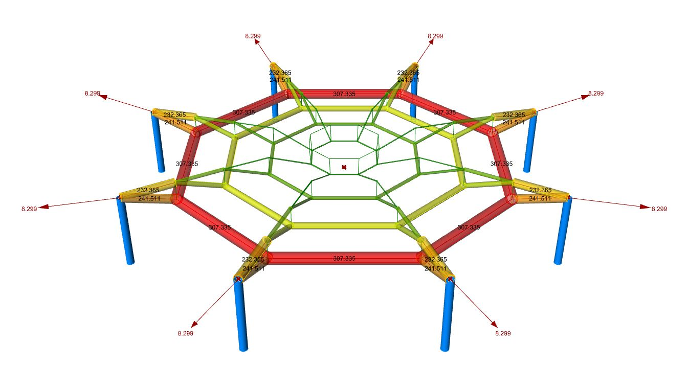
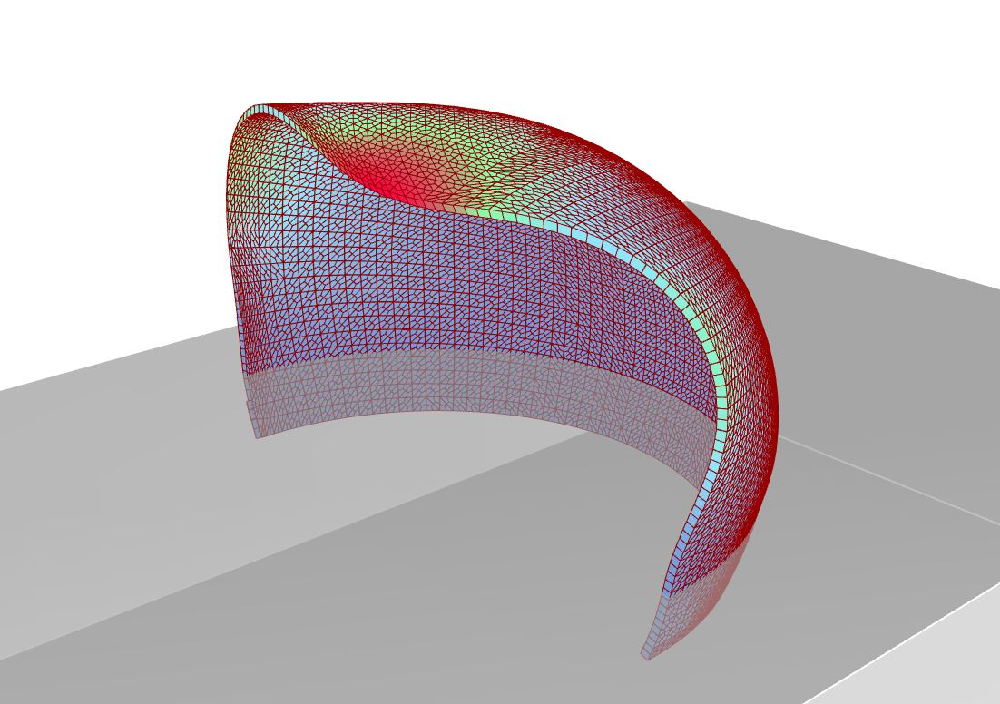
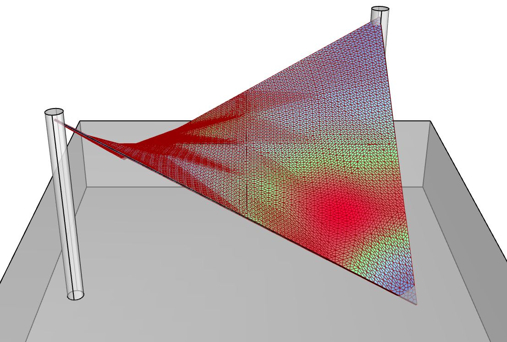